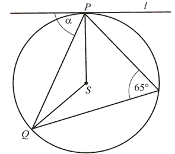
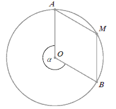
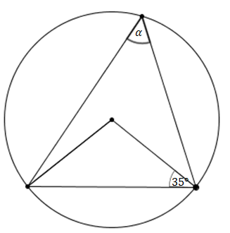
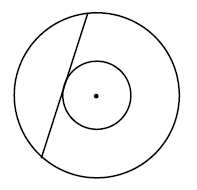

Różne zadania z okręgu i koła
Średnice \(AB\) i \(CD\) okręgu o środku \(S\) przecinają się pod kątem
\(50^\circ\) (tak jak na rysunku).  Miara kąta \(\alpha \) jest równa
Miara kąta \(\alpha \) jest równa
Miara kąta \(\alpha \) jest równa A.\( 25^\circ \)
B.\( 30^\circ \)
C.\( 40^\circ \)
D.\( 50^\circ \)
A
Wierzchołki trójkąta \(ABC\) leżą na okręgu i środek \(O\) okręgu leży wewnątrz
trójkąta. Jeśli kąt \(ABO\) ma miarę \(20^\circ\), to kąt \(ACB\) ma miarę:
A.\( 70^\circ \)
B.\( 40^\circ \)
C.\( 20^\circ \)
D.\( 10^\circ \)
A
Punkty \(A\) i \(B\) należą do okręgu o środku w punkcie \(O\) i promieniu \(3\).
Wiadomo, że \(|\sphericalangle AOB|=150^\circ \). Cięciwa \(AB\) dzieli okrąg na dwa łuki, z których
większy ma długość:
A.\( 2{,}5\pi \)
B.\( 3{,}5\pi \)
C.\( 3{,}75\pi \)
D.\( 5{,}25\pi \)
B
Cięciwa okręgu ma długość \(8\) cm i jest oddalona od jego środka o \(3\) cm.
Promień tego okręgu ma długość
A.\( 3 \) cm
B.\( 4 \) cm
C.\( 5 \) cm
D.\( 8 \) cm
C
Punkty \(A, B, C, D\) i \(E\) leżą na okręgu o środku \(S\) i dzielą ten okrąg na
pięć łuków równej długości (zobacz rysunek).  Wówczas miara kąta ostrego \(\alpha \) między cięciwą \(AB\) i styczną do tego okręgu
w punkcie \(A\) jest równa
Wówczas miara kąta ostrego \(\alpha \) między cięciwą \(AB\) i styczną do tego okręgu
w punkcie \(A\) jest równa
Wówczas miara kąta ostrego \(\alpha \) między cięciwą \(AB\) i styczną do tego okręgu
w punkcie \(A\) jest równa A.\( \alpha =18^\circ \)
B.\( \alpha =30^\circ \)
C.\( \alpha =36^\circ \)
D.\( \alpha =54^\circ \)
C
Dane są dwa okręgi o promieniach \(12\) i \(17\). Mniejszy okrąg przechodzi przez
środek większego okręgu. Odległość między środkami tych okręgów jest równa
A.\( 5 \)
B.\( 12 \)
C.\( 17 \)
D.\( 29 \)
B
Punkty \( A=(-1,3)\) i \(C=(7,9) \) są przeciwległymi
wierzchołkami prostokąta \( ABCD \). Promień okręgu opisanego na tym prostokącie jest równy
A.\(10 \)
B.\(6\sqrt{2} \)
C.\(5 \)
D.\(3\sqrt{2} \)
C
Dany jest prostokąt \(ABCD\). Okręgi o średnicach \(AB\) i \(AD\) przecinają się w
punktach \(A\) i \(P\) (zobacz rysunek). Wykaż, że punkty \(B, P\) i \(D\) leżą na jednej prostej.

Na odcinku \(AB\) wybrano punkt \(C\), a następnie zbudowano trójkąty równoboczne
\(ACD\) i \(CBE\) tak, że wierzchołki \(D\) i \(E\) leżą po tej samej stronie prostej \(AB\). Okręgi
opisane na tych trójkątach przecinają się w punktach \(C\) i \(P\) (zobacz rysunek).  Udowodnij, że miara kąta \(APB\) jest
równa \(120^\circ \).
Udowodnij, że miara kąta \(APB\) jest
równa \(120^\circ \).
Udowodnij, że miara kąta \(APB\) jest
równa \(120^\circ \).Oblicz kąt \(\alpha \) między cięciwą \(PQ\), a styczną do okręgu w punkcie \(P\).

\(\alpha =65^\circ \)
Punkty \(A\), \(B\) i \(C\) okręgu dzielą ten okrąg na trzy łuki, których długości
pozostają w stosunku \(\overset{\frown}{|AB|}:\overset{\frown}{|BC|}:\overset{\frown}{|AC|}=3:4:5\).
Oblicz miary kątów \(\alpha\), \(\beta\), \(\gamma\) trójkąta \(ABC\). 
\(\alpha =60^\circ \), \(\beta =75^\circ \), \(\gamma =45^\circ \)
Dane są dwa półokręgi o wspólnym środku \(O\) i średnicach odpowiednio \(AB\) i
\(CD\) (punkty \(A, B, C, D\) i \(O\) są współliniowe). Punkt \(P\) leży na wewnętrznym półokręgu,
punkt \(R\) leży na zewnętrznym półokręgu, punkty \(O, P\) i \(R\) są współliniowe. Udowodnij, że
\(|\sphericalangle APB| + |\sphericalangle CRD| = 180^\circ\). 
W czworokącie \(OBMA\) kąty wewnętrzne \(AOB\) i \(AMB\) mają równe miary.  Wówczas kąt \(\alpha \) ma miarę:
A.\( 160^\circ \)
B.\( 120^\circ \)
C.\( 240^\circ \)
D.\( 210^\circ \)
C
Dwa okręgi są styczne zewnętrznie. Odległość ich środków jest równa \(8\) cm. Gdyby
te okręgi były styczne wewnętrznie, to odległość ich środków byłaby równa \(2\) cm. Oblicz długości
promieni tych okręgów.
\(r_1=5\), \(r_2=3\)
Miara kąta \( \alpha \), zaznaczonego na rysunku, jest równa 
A.\(35^\circ \)
B.\(55^\circ \)
C.\(70^\circ \)
D.\(110^\circ \)
B
Na trójkącie równoramiennym \( ABC \), w którym \( \vert{AC}\vert=\vert{BC}\vert \)
opisano okrąg o środku \( O \). Prosta \( k \) jest styczna do tego okręgu w punkcie \( B \) i \(
\vert{\sphericalangle BOC}\vert=140^\circ \).  Kąt \( \alpha \) ma miarę
Kąt \( \alpha \) ma miarę
Kąt \( \alpha \) ma miarę A.\(70^\circ \)
B.\(40^\circ \)
C.\(90^\circ \)
D.\(50^\circ \)
B
Dane są dwa okręgi o promieniach \(10\) i \(15\). Mniejszy okrąg przechodzi przez
środek większego okręgu. Odległość między środkami tych okręgów jest równa
A.\( 2{,}5 \)
B.\( 5 \)
C.\( 10 \)
D.\( 12{,}5 \)
C
W pierścieniu kołowym cięciwa zewnętrznego okręgu ma długość \(10\) i jest styczna
do wewnętrznego okręgu (zobacz rysunek).  Wykaż, że pole tego pierścienia można wyrazić wzorem, w którym nie występują promienie
wyznaczających go okręgów.
Na trójkącie o bokach długości \(\sqrt{7}, \sqrt{8}, \sqrt{15}\) opisano okrąg.
Oblicz promień tego okręgu.
\(r=\frac{\sqrt{15}}{2}\)
Dane są punkty \(A = (2, 3)\) oraz \(B = (−6, −3)\). Promień okręgu wpisanego w
trójkąt równoboczny \(ABC\) jest równy
A.\( \frac{20\sqrt{3}}{3} \)
B.\( \frac{40\sqrt{3}}{3} \)
C.\( \frac{5\sqrt{3}}{3} \)
D.\( \frac{10\sqrt{3}}{3} \)
C